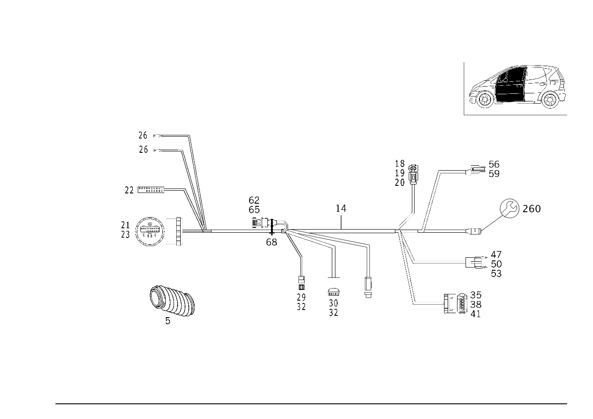

| № | Артикул | Название | Кол. | Примечание | Ограничение |
|---|---|---|---|---|---|
| 5 | A 168 821 01 97 | Шланг (SCHLAUCH) | 2 | ЗАЩИТН. РУКАВ ЭЛ. ПРОВОДА СТОЙКИ ПЕРЕДН. СТЕНКИ К ДВЕРИ ВОДИТ. [402] БОЛЬШЕ НЕ ПОСТАВЛЯЕТСЯ | |
| 8 | A 168 821 02 97 | Шланг (SCHLAUCH) | 2 | ЗАЩИТН. РУКАВ ЭЛ. ПРОВОДА ЦЕНТР. СТОЙКИ К ЗАДН. ДВЕРИ | |
| 14 | A 168 540 19 10 | ЖГУТ ЭЛ.-ПРОВОДКИ | 1 | ДВЕРЬ ПЕРЕДНЯЯ ЛЕВАЯ | -584 |
| 14 | A 168 540 33 33 | Электрический провод (ELEKTRISCHE LEITUNG) | 1 | ДВЕРЬ ПЕРЕДНЯЯ ЛЕВАЯ | -584 |
| 14 | A 168 540 51 08 | ЖГУТ ЭЛ.-ПРОВОДКИ | 1 | ДВЕРЬ ПЕРЕДНЯЯ ЛЕВАЯ | 500+-(498/498+500) |
| 14 | A 168 540 19 10 | ЖГУТ ЭЛ.-ПРОВОДКИ | 1 | ДВЕРЬ ПЕРЕДНЯЯ ЛЕВАЯ | 500+-(498/498+500) |
| 14 | A 168 540 33 33 | Электрический провод (ELEKTRISCHE LEITUNG) | 1 | ДВЕРЬ ПЕРЕДНЯЯ ЛЕВАЯ | 500+-(498/498+500) |
| 14 | A 168 540 19 10 | ЖГУТ ЭЛ.-ПРОВОДКИ | 1 | ДВЕРЬ ПЕРЕДНЯЯ ПРАВАЯ | (M668/M166+(M14/M16/M19))+-584 |
| 14 | A 168 540 33 33 | Электрический провод (ELEKTRISCHE LEITUNG) | 1 | ДВЕРЬ ПЕРЕДНЯЯ ПРАВАЯ | -584 |
| 14 | A 168 540 51 08 | ЖГУТ ЭЛ.-ПРОВОДКИ | 1 | ДВЕРЬ ПЕРЕДНЯЯ ПРАВАЯ | 500+-(498/498+500) |
| 14 | A 168 540 19 10 | ЖГУТ ЭЛ.-ПРОВОДКИ | 1 | ДВЕРЬ ПЕРЕДНЯЯ ПРАВАЯ | 500+-(498/498+500) |
| 14 | A 168 540 33 33 | Электрический провод (ELEKTRISCHE LEITUNG) | 1 | ДВЕРЬ ПЕРЕДНЯЯ ПРАВАЯ | 500+-(498/498+500) |
| 14 | A 168 540 90 32 | Электрический провод (ELEKTRISCHE LEITUNG) | 1 | ДВЕРЬ ПЕРЕДНЯЯ ЛЕВАЯ | 498/498+500 |
| 14 | A 168 540 52 08 | ЖГУТ ЭЛ.-ПРОВОДКИ | 1 | ДВЕРЬ ПЕРЕДНЯЯ ПРАВАЯ | 498/498+500 |
| 14 | A 168 540 90 32 | Электрический провод (ELEKTRISCHE LEITUNG) | 1 | ДВЕРЬ ПЕРЕДНЯЯ ПРАВАЯ | 498/498+500 |
| 14 | A 168 540 19 10 | ЖГУТ ЭЛ.-ПРОВОДКИ | 1 | ДВЕРЬ ПЕРЕДНЯЯ ЛЕВАЯ | 880+-584 |
| 14 | A 168 540 33 33 | Электрический провод (ELEKTRISCHE LEITUNG) | 1 | ДВЕРЬ ПЕРЕДНЯЯ ЛЕВАЯ | 880+-584 |
| 14 | A 168 540 19 10 | ЖГУТ ЭЛ.-ПРОВОДКИ | 1 | ДВЕРЬ ПЕРЕДНЯЯ ПРАВАЯ | 880+-584 |
| 14 | A 168 540 33 33 | Электрический провод (ELEKTRISCHE LEITUNG) | 1 | ДВЕРЬ ПЕРЕДНЯЯ ПРАВАЯ | 880+-584 |
| 14 | A 168 540 52 08 | ЖГУТ ЭЛ.-ПРОВОДКИ | 1 | ДВЕРЬ ПЕРЕДНЯЯ ЛЕВАЯ | ((M668/M166+(M14/M16/M19))+(500+584))+-880 |
| 14 | A 168 540 90 32 | Электрический провод (ELEKTRISCHE LEITUNG) | 1 | ДВЕРЬ ПЕРЕДНЯЯ ЛЕВАЯ | ((M668/M166+(M14/M16/M19))+(500+584))+-880 |
| 14 | A 168 540 52 08 | ЖГУТ ЭЛ.-ПРОВОДКИ | 1 | ДВЕРЬ ПЕРЕДНЯЯ ПРАВАЯ | ((M668/M166+(M14/M16/M19))+(500+584))+-880 |
| 14 | A 168 540 90 32 | Электрический провод (ELEKTRISCHE LEITUNG) | 1 | ДВЕРЬ ПЕРЕДНЯЯ ПРАВАЯ | ((M668/M166+(M14/M16/M19))+(500+584))+-880 |
| 18 | A 000 540 40 05 | - Электрический провод (ELEKTRISCHE LEITUNG) | 1 | ЭЛЕКТРОМОТОР СТЕКЛОПОДЪЁМНИКА; 2.5 MM2 SLK2.8 [T774] СОЕДИНИТЕЛИ СЛЕДУЕТ ЗАКАЗЫВАТЬ В СООТВЕТСТВИИ С ОБЩИМ ПОПЕРЕЧНЫМ СЕЧЕНИЕМ СОЕДИНЯЕМЫХ ПРОВОДОВРУКОВОДСТВО ПО РЕМОНТУ СМ. WIS. ================================================================================================= SOLDER CONNECTOR SLEEVES: TOTAL WIRE CROSS-SECTION: A 001 546 99 41 GREEN 0.7 - 2.4 MM2 A 002 546 00 41 RED 2.0 - 4.0 MM2 A 002 546 01 41 BLUE 3.5 - 8.0 MM2 A 002 546 11 41 YELLOW 7.5 - 12.0 MM2 BUTT JOINT: A 002 546 13 41 0.5 MM2 A 002 546 14 41 0.8 MM2 A 002 546 15 41 1.3 MM2 A 002 546 16 41 2.0 MM2 =================================================================================================== | |
| 18 | A 000 540 40 05 | - Электрический провод (ELEKTRISCHE LEITUNG) | 1 | ЭЛЕКТРОМОТОР СТЕКЛОПОДЪЁМНИКА; 2.5 MM2 SLK2.8 [T774] СОЕДИНИТЕЛИ СЛЕДУЕТ ЗАКАЗЫВАТЬ В СООТВЕТСТВИИ С ОБЩИМ ПОПЕРЕЧНЫМ СЕЧЕНИЕМ СОЕДИНЯЕМЫХ ПРОВОДОВРУКОВОДСТВО ПО РЕМОНТУ СМ. WIS. ================================================================================================= SOLDER CONNECTOR SLEEVES: TOTAL WIRE CROSS-SECTION: A 001 546 99 41 GREEN 0.7 - 2.4 MM2 A 002 546 00 41 RED 2.0 - 4.0 MM2 A 002 546 01 41 BLUE 3.5 - 8.0 MM2 A 002 546 11 41 YELLOW 7.5 - 12.0 MM2 BUTT JOINT: A 002 546 13 41 0.5 MM2 A 002 546 14 41 0.8 MM2 A 002 546 15 41 1.3 MM2 A 002 546 16 41 2.0 MM2 =================================================================================================== | |
| 19 | A 009 545 82 26 | - Контактная втулка (KONTAKTBUCHSE) | NB | ЭЛЕКТРОМОТОР СТЕКЛОПОДЪЁМНИКА; 1.5\-2.5 MM2 SLK2.8 | |
| 19 | A 000 540 39 05 | - Электрический провод (EL LEITUNG) | NB | ЭЛЕКТРОМОТОР СТЕКЛОПОДЪЁМНИКА; 1.5 MM2 SLK2.8 [T774] СОЕДИНИТЕЛИ СЛЕДУЕТ ЗАКАЗЫВАТЬ В СООТВЕТСТВИИ С ОБЩИМ ПОПЕРЕЧНЫМ СЕЧЕНИЕМ СОЕДИНЯЕМЫХ ПРОВОДОВРУКОВОДСТВО ПО РЕМОНТУ СМ. WIS. ================================================================================================= SOLDER CONNECTOR SLEEVES: TOTAL WIRE CROSS-SECTION: A 001 546 99 41 GREEN 0.7 - 2.4 MM2 A 002 546 00 41 RED 2.0 - 4.0 MM2 A 002 546 01 41 BLUE 3.5 - 8.0 MM2 A 002 546 11 41 YELLOW 7.5 - 12.0 MM2 BUTT JOINT: A 002 546 13 41 0.5 MM2 A 002 546 14 41 0.8 MM2 A 002 546 15 41 1.3 MM2 A 002 546 16 41 2.0 MM2 =================================================================================================== | |
| 20 | A 000 545 76 80 | - Уплотнение (DICHTUNG) | NB | ЭЛЕКТРОМОТОР СТЕКЛОПОДЪЁМНИКА; 2.2\-3.0 MM SLK2.8 | |
| 21 | A 168 545 03 40 | - ДЕРЖАТЕЛЬ | 1 | МЕСТО СОЕДИН. ДВЕРИ, СТОЙКА A | |
| 21 | A 168 545 03 40 | - ДЕРЖАТЕЛЬ | 1 | МЕСТО СОЕДИН. ДВЕРИ, СТОЙКА A | |
| 22 | A 168 545 27 40 | - Корпус штифт. контактов (STIFTGEHAEUSE) | 1 | МЕСТО СОЕДИН. ДВЕРИ, СТОЙКА A; 17\-PIN MQS | |
| 22 | A 168 545 27 40 | - Корпус штифт. контактов (STIFTGEHAEUSE) | 1 | МЕСТО СОЕДИН. ДВЕРИ, СТОЙКА A; 17\-PIN MQS | |
| 23 | A 168 545 16 40 | - Колодка разъема (FLACHSTECKERGEHAEUSE) | 1 | МЕСТО СОЕДИН. ДВЕРИ, СТОЙКА A | |
| 23 | A 168 545 16 40 | - Колодка разъема (FLACHSTECKERGEHAEUSE) | 1 | МЕСТО СОЕДИН. ДВЕРИ, СТОЙКА A | |
| 26 | A 029 545 59 28 | - Плоский штекер | NB | ЛЕВЫЙ И ПРАВЫЙ; 1.0 MM2 | |
| 26 | A 029 545 60 28 | - Плоский штекер | NB | ЛЕВЫЙ И ПРАВЫЙ; 1,5\-2,5 MM2 | |
| 29 | A 002 545 64 26 | - Корпус штекерной втулки (STECKHUELSENGEHAEUSE) | 1 | POWER MIRRORS, с PROGRAMING, LEFT; 2\-PIN | |
| 30 | A 002 545 82 26 | - Корпус штекерной втулки (STECKHUELSENGEHAEUSE) | 1 | НАРУЖ. ЗЕРКАЛО ЭЛ. РЕГУЛИР. | |
| 30 | A 002 545 82 26 | - Корпус штекерной втулки (STECKHUELSENGEHAEUSE) | 1 | НАРУЖ. ЗЕРКАЛО ЭЛ. РЕГУЛИР. | |
| 32 | A 003 545 02 26 | - Контактная пружина (FEDERSTECKER) | NB | ЛЕВЫЙ И ПРАВЫЙ; 0.5\-1.5mm2 | |
| 35 | A 208 545 16 28 | - Корпус штекера (STECKERGEHAEUSE) | 1 | БУ ДВЕРИ; 9 PIN SLK2.8 | |
| 35 | A 208 545 16 28 | - Корпус штекера (STECKERGEHAEUSE) | 1 | БУ ДВЕРИ; 9 PIN SLK2.8 | |
| 38 | A 000 540 38 05 | - Электрический провод (ELEKTRISCHE LEITUNG) | NB | 0.75 MM2 SLK2.8 [T774] СОЕДИНИТЕЛИ СЛЕДУЕТ ЗАКАЗЫВАТЬ В СООТВЕТСТВИИ С ОБЩИМ ПОПЕРЕЧНЫМ СЕЧЕНИЕМ СОЕДИНЯЕМЫХ ПРОВОДОВРУКОВОДСТВО ПО РЕМОНТУ СМ. WIS. ================================================================================================= SOLDER CONNECTOR SLEEVES: TOTAL WIRE CROSS-SECTION: A 001 546 99 41 GREEN 0.7 - 2.4 MM2 A 002 546 00 41 RED 2.0 - 4.0 MM2 A 002 546 01 41 BLUE 3.5 - 8.0 MM2 A 002 546 11 41 YELLOW 7.5 - 12.0 MM2 BUTT JOINT: A 002 546 13 41 0.5 MM2 A 002 546 14 41 0.8 MM2 A 002 546 15 41 1.3 MM2 A 002 546 16 41 2.0 MM2 =================================================================================================== | |
| 38 | A 000 540 39 05 | - Электрический провод (EL LEITUNG) | NB | 1.5 MM2 SLK2.8 [T774] СОЕДИНИТЕЛИ СЛЕДУЕТ ЗАКАЗЫВАТЬ В СООТВЕТСТВИИ С ОБЩИМ ПОПЕРЕЧНЫМ СЕЧЕНИЕМ СОЕДИНЯЕМЫХ ПРОВОДОВРУКОВОДСТВО ПО РЕМОНТУ СМ. WIS. ================================================================================================= SOLDER CONNECTOR SLEEVES: TOTAL WIRE CROSS-SECTION: A 001 546 99 41 GREEN 0.7 - 2.4 MM2 A 002 546 00 41 RED 2.0 - 4.0 MM2 A 002 546 01 41 BLUE 3.5 - 8.0 MM2 A 002 546 11 41 YELLOW 7.5 - 12.0 MM2 BUTT JOINT: A 002 546 13 41 0.5 MM2 A 002 546 14 41 0.8 MM2 A 002 546 15 41 1.3 MM2 A 002 546 16 41 2.0 MM2 =================================================================================================== | |
| 41 | A 000 545 71 80 | - Уплотнительная прокладка (DICHTBEILAGE) | NB | 1.1\-2.1 MM SLK2.8 | |
| 41 | A 000 545 76 80 | - Уплотнение (DICHTUNG) | NB | 2.2\-3.0 MM SLK2.8 | |
| 47 | A 008 545 08 28 | - Корпус штекерной втулки | 1 | ЭЛЕКТРОМОТОР СТЕКЛОПОДЪЁМНИКА; 2\-PIN RK4 | |
| 47 | A 008 545 08 28 | - Корпус штекерной втулки | 1 | ЭЛЕКТРОМОТОР СТЕКЛОПОДЪЁМНИКА; 2\-PIN RK4 | |
| 50 | A 008 545 11 28 | - Крышка | 1 | 2\-PIN RK4. | |
| 50 | A 008 545 11 28 | - Крышка | 1 | КОРПУС ВТУЛОЧНЫХ КОНТАКТОВ; 2\-PIN RK4. | |
| 53 | A 001 545 44 26 | - Контактная втулка (KONTAKTBUCHSE) | NB | 0.35\-6.0 MM2 RK4.0 | |
| 53 | A 001 545 44 26 | - Контактная втулка (KONTAKTBUCHSE) | NB | 0.35\-6.0 MM2 RK4.0 | |
| 56 | A 168 820 22 10 | - Переключатель (SCHALTER) | 1 | DOOR LOCK SWITCH | |
| 56 | A 168 820 22 10 | - Переключатель (SCHALTER) | 1 | DOOR LOCK SWITCH | |
| 59 | A 000 540 46 05 | - Электрический провод (ELEKTRISCHE LEITUNG) | NB | 0.75 MM2 MQS SN [T774] СОЕДИНИТЕЛИ СЛЕДУЕТ ЗАКАЗЫВАТЬ В СООТВЕТСТВИИ С ОБЩИМ ПОПЕРЕЧНЫМ СЕЧЕНИЕМ СОЕДИНЯЕМЫХ ПРОВОДОВРУКОВОДСТВО ПО РЕМОНТУ СМ. WIS. ================================================================================================= SOLDER CONNECTOR SLEEVES: TOTAL WIRE CROSS-SECTION: A 001 546 99 41 GREEN 0.7 - 2.4 MM2 A 002 546 00 41 RED 2.0 - 4.0 MM2 A 002 546 01 41 BLUE 3.5 - 8.0 MM2 A 002 546 11 41 YELLOW 7.5 - 12.0 MM2 BUTT JOINT: A 002 546 13 41 0.5 MM2 A 002 546 14 41 0.8 MM2 A 002 546 15 41 1.3 MM2 A 002 546 16 41 2.0 MM2 =================================================================================================== | |
| 62 | A 168 545 21 28 | - Корпус штекерной втулки (STECKHUELSENGEHAEUSE) | 1 | ДИНАМИК СПЕРЕДИ; 2 PIN MCP2.8 [402] БОЛЬШЕ НЕ ПОСТАВЛЯЕТСЯ | |
| 62 | A 168 545 21 28 | - Корпус штекерной втулки (STECKHUELSENGEHAEUSE) | 1 | ДИНАМИК СПЕРЕДИ; 2 PIN MCP2.8 [402] БОЛЬШЕ НЕ ПОСТАВЛЯЕТСЯ | |
| 65 | A 029 545 59 28 | - Плоский штекер | NB | ДИНАМИК СПЕРЕДИ; 1.0 MM2 | |
| 68 | A 005 997 62 90 | - Кабельная стяжка (KABELBAND) | NB | ЛЕВЫЙ И ПРАВЫЙ; 260X3.3MM | |
| 70 | A 168 540 59 08 | Жгут электропроводки (LEITUNGSSATZ) | 1 | СТЕКЛОПОДЪЕМН. ЗАДНИХ ДВЕРЕЙ [402] БОЛЬШЕ НЕ ПОСТАВЛЯЕТСЯ | |
| 70 | A 168 540 59 08 | Жгут электропроводки (LEITUNGSSATZ) | 1 | СТЕКЛОПОДЪЕМН. ЗАДНИХ ДВЕРЕЙ [402] БОЛЬШЕ НЕ ПОСТАВЛЯЕТСЯ | |
| 71 | A 210 545 87 28 | - Сцепление, механическое (KUPPLUNG, MECHANISCH) | 1 | МЕСТО РАЗЪЕДИНЕНИЯ СТОЙКИ B; 4\-PIN JPT | |
| 71 | A 210 545 87 28 | - Сцепление, механическое (KUPPLUNG, MECHANISCH) | 1 | МЕСТО РАЗЪЕДИНЕНИЯ СТОЙКИ B; 4\-PIN JPT | |
| 74 | A 011 545 81 26 | - Контактная пружина (FEDERSTECKER) | NB | 0.5\-1.0 MM2 JPT | |
| 74 | A 004 545 53 26 | - Контактная пружина | NB | 1.5\-2.5 MM2 JPT | |
| 80 | A 000 540 46 05 | - Электрический провод (ELEKTRISCHE LEITUNG) | NB | 0.75 MM2 MQS SN [T774] СОЕДИНИТЕЛИ СЛЕДУЕТ ЗАКАЗЫВАТЬ В СООТВЕТСТВИИ С ОБЩИМ ПОПЕРЕЧНЫМ СЕЧЕНИЕМ СОЕДИНЯЕМЫХ ПРОВОДОВРУКОВОДСТВО ПО РЕМОНТУ СМ. WIS. ================================================================================================= SOLDER CONNECTOR SLEEVES: TOTAL WIRE CROSS-SECTION: A 001 546 99 41 GREEN 0.7 - 2.4 MM2 A 002 546 00 41 RED 2.0 - 4.0 MM2 A 002 546 01 41 BLUE 3.5 - 8.0 MM2 A 002 546 11 41 YELLOW 7.5 - 12.0 MM2 BUTT JOINT: A 002 546 13 41 0.5 MM2 A 002 546 14 41 0.8 MM2 A 002 546 15 41 1.3 MM2 A 002 546 16 41 2.0 MM2 =================================================================================================== | |
| 83 | A 029 545 55 28 | - Корпус штекерной втулки (STECKHUELSENGEHAEUSE) | 1 | ВЫКЛ\-ТЕЛЬ СТЕКЛОПОДЪЕМН. НА ЗАДН. ДВЕРИ; 3\-PIN MQS | |
| 83 | A 029 545 55 28 | - Корпус штекерной втулки (STECKHUELSENGEHAEUSE) | 1 | ВЫКЛ\-ТЕЛЬ СТЕКЛОПОДЪЕМН. НА ЗАДН. ДВЕРИ; 3\-PIN MQS | |
| 86 | A 000 540 46 05 | - Электрический провод (ELEKTRISCHE LEITUNG) | NB | ЛЕВЫЙ И ПРАВЫЙ; 0.75 MM2 MQS SN [T774] СОЕДИНИТЕЛИ СЛЕДУЕТ ЗАКАЗЫВАТЬ В СООТВЕТСТВИИ С ОБЩИМ ПОПЕРЕЧНЫМ СЕЧЕНИЕМ СОЕДИНЯЕМЫХ ПРОВОДОВРУКОВОДСТВО ПО РЕМОНТУ СМ. WIS. ================================================================================================= SOLDER CONNECTOR SLEEVES: TOTAL WIRE CROSS-SECTION: A 001 546 99 41 GREEN 0.7 - 2.4 MM2 A 002 546 00 41 RED 2.0 - 4.0 MM2 A 002 546 01 41 BLUE 3.5 - 8.0 MM2 A 002 546 11 41 YELLOW 7.5 - 12.0 MM2 BUTT JOINT: A 002 546 13 41 0.5 MM2 A 002 546 14 41 0.8 MM2 A 002 546 15 41 1.3 MM2 A 002 546 16 41 2.0 MM2 =================================================================================================== | |
| 89 | A 208 545 16 28 | - Корпус штекера (STECKERGEHAEUSE) | 1 | БУ ДВЕРИ; 9 PIN SLK2.8 | |
| 89 | A 208 545 16 28 | - Корпус штекера (STECKERGEHAEUSE) | 1 | БУ ДВЕРИ; 9 PIN SLK2.8 | |
| 92 | A 000 540 38 05 | - Электрический провод (ELEKTRISCHE LEITUNG) | NB | 0.75 MM2 SLK2.8 [T774] СОЕДИНИТЕЛИ СЛЕДУЕТ ЗАКАЗЫВАТЬ В СООТВЕТСТВИИ С ОБЩИМ ПОПЕРЕЧНЫМ СЕЧЕНИЕМ СОЕДИНЯЕМЫХ ПРОВОДОВРУКОВОДСТВО ПО РЕМОНТУ СМ. WIS. ================================================================================================= SOLDER CONNECTOR SLEEVES: TOTAL WIRE CROSS-SECTION: A 001 546 99 41 GREEN 0.7 - 2.4 MM2 A 002 546 00 41 RED 2.0 - 4.0 MM2 A 002 546 01 41 BLUE 3.5 - 8.0 MM2 A 002 546 11 41 YELLOW 7.5 - 12.0 MM2 BUTT JOINT: A 002 546 13 41 0.5 MM2 A 002 546 14 41 0.8 MM2 A 002 546 15 41 1.3 MM2 A 002 546 16 41 2.0 MM2 =================================================================================================== | |
| 92 | A 000 540 39 05 | - Электрический провод (EL LEITUNG) | NB | 1.5 MM2 SLK2.8 [T774] СОЕДИНИТЕЛИ СЛЕДУЕТ ЗАКАЗЫВАТЬ В СООТВЕТСТВИИ С ОБЩИМ ПОПЕРЕЧНЫМ СЕЧЕНИЕМ СОЕДИНЯЕМЫХ ПРОВОДОВРУКОВОДСТВО ПО РЕМОНТУ СМ. WIS. ================================================================================================= SOLDER CONNECTOR SLEEVES: TOTAL WIRE CROSS-SECTION: A 001 546 99 41 GREEN 0.7 - 2.4 MM2 A 002 546 00 41 RED 2.0 - 4.0 MM2 A 002 546 01 41 BLUE 3.5 - 8.0 MM2 A 002 546 11 41 YELLOW 7.5 - 12.0 MM2 BUTT JOINT: A 002 546 13 41 0.5 MM2 A 002 546 14 41 0.8 MM2 A 002 546 15 41 1.3 MM2 A 002 546 16 41 2.0 MM2 =================================================================================================== | |
| 95 | A 000 545 71 80 | - Уплотнительная прокладка (DICHTBEILAGE) | NB | СИНИЙ; 1.1\-2.1 MM SLK2.8 | |
| 95 | A 000 545 76 80 | - Уплотнение (DICHTUNG) | NB | КРАСНО\-КОРИЧНЕВЫЙ; 2.2\-3.0 MM SLK2.8 | |
| 95 | A 000 545 78 80 | - Уплотнение (DICHTUNG) | NB | ЗЕЛЕНЫЙ; 5.2 MM MLK1.2/SLK2.8/LKS1.5 | |
| 95 | A 000 545 79 80 | - Заглушка (BLINDSTOPFEN) | NB | БЕЛЫЙ; 4.0 MM MLK1.2 LKS1.5 | |
| 98 | A 168 545 21 28 | - Корпус штекерной втулки (STECKHUELSENGEHAEUSE) | 1 | ДИНАМИК ЗАДН. ДВЕРИ; 2 PIN MCP2.8 [402] БОЛЬШЕ НЕ ПОСТАВЛЯЕТСЯ | |
| 98 | A 168 545 21 28 | - Корпус штекерной втулки (STECKHUELSENGEHAEUSE) | 1 | ДИНАМИК ЗАДН. ДВЕРИ; 2 PIN MCP2.8 [402] БОЛЬШЕ НЕ ПОСТАВЛЯЕТСЯ | |
| 101 | A 029 545 59 28 | - Плоский штекер | NB | ЛЕВЫЙ И ПРАВЫЙ; 1.0 MM2 | |
| 104 | A 005 997 62 90 | - Кабельная стяжка (KABELBAND) | NB | ЛЕВЫЙ И ПРАВЫЙ; 260X3.3MM | |
| 107 | A 094 997 58 03 | - связующее вещество (KABELBAND) | NB | ЛЕВЫЙ И ПРАВЫЙ; 4.6X180 MM | |
| 110 | A 168 540 24 08 | ЖГУТ ЭЛ.-ПРОВОДКИ | 1 | ДВЕРЬ БАГАЖНОГО ОТДЕЛЕНИЯ [402] БОЛЬШЕ НЕ ПОСТАВЛЯЕТСЯ | |
| 113 | A 010 545 97 26 | - Розетка (STECKDOSE) | 1 | ВЫКЛ\-ТЕЛЬ ФОНАРЯ ОСВЕЩ.БАГАЖ.ОТДЕЛ.; 3\-PIN [402] БОЛЬШЕ НЕ ПОСТАВЛЯЕТСЯ | |
| 116 | A 011 545 81 26 | - Контактная пружина (FEDERSTECKER) | NB | 0.5\-1.0 MM2 JPT | |
| 122 | A 000 540 46 05 | - Электрический провод (ELEKTRISCHE LEITUNG) | NB | 0.75 MM2 MQS SN [T774] СОЕДИНИТЕЛИ СЛЕДУЕТ ЗАКАЗЫВАТЬ В СООТВЕТСТВИИ С ОБЩИМ ПОПЕРЕЧНЫМ СЕЧЕНИЕМ СОЕДИНЯЕМЫХ ПРОВОДОВРУКОВОДСТВО ПО РЕМОНТУ СМ. WIS. ================================================================================================= SOLDER CONNECTOR SLEEVES: TOTAL WIRE CROSS-SECTION: A 001 546 99 41 GREEN 0.7 - 2.4 MM2 A 002 546 00 41 RED 2.0 - 4.0 MM2 A 002 546 01 41 BLUE 3.5 - 8.0 MM2 A 002 546 11 41 YELLOW 7.5 - 12.0 MM2 BUTT JOINT: A 002 546 13 41 0.5 MM2 A 002 546 14 41 0.8 MM2 A 002 546 15 41 1.3 MM2 A 002 546 16 41 2.0 MM2 =================================================================================================== | |
| 125 | A 210 545 61 28 | - Штекер (STECKER) | 1 | ДВИГ. СТЕКЛООЧИСТ. НА ЗАДН. СТЕНКЕ; 3\-PIN JPT | |
| 128 | A 011 545 81 26 | - Контактная пружина (FEDERSTECKER) | NB | 0.5\-1.0 MM2 JPT | |
| 128 | A 004 545 53 26 | - Контактная пружина | NB | 1.5\-2.5 MM2 JPT | |
| 131 | A 210 545 63 28 | - Корпус штекерной втулки (STECKHUELSENGEHAEUSE) | 1 | ДОП. СТОП\-СИГНАЛ; 2\-PIN JPT | |
| 134 | A 011 545 81 26 | - Контактная пружина (FEDERSTECKER) | NB | 0.5\-1.0 MM2 JPT | |
| 137 | A 000 546 83 40 | - Штекерная втулка (STECKHUELSE) | NB | ФОНАРЬ ОСВЕЩЕНИЯ НОМЕРНОГО ЗНАКА; 0.5\-1.0 MM2 FF6.3 | |
| 140 | A 000 546 11 45 | - Изоляционная втулка (ISOLIERHUELSE) | NB | ЛЕВЫЙ ФОНАРЬ ОСВЕЩЕНИЯ НОМЕРНОГО ЗНАКА; FF6.3 | |
| 140 | A 000 546 14 45 | - Изоляционная втулка (ISOLIERHUELSE) | NB | ПРАВЫЙ ФОНАРЬ ОСВЕЩЕНИЯ НОМЕРНОГО ЗНАКА; FF6.3 | |
| 143 | A 168 545 33 28 | - Контактный стержень (KONTAKTSTIFT) | NB | ОБОГРЕВ ЗАДНЕГО СТЕКЛА; 1.0\-2.5 mm2 | |
| 146 | A 008 545 60 26 | - Плоская штекерная втулка (FLACHSTECKHUELSE) | 1 | ЗАД. АНТЕННА; 1.5\-2.5 MM2 PL6.3 | |
| 149 | A 168 821 00 97 | - втулка (TUELLE) | 1 | ДВЕРЬ БАГАЖНОГО ОТДЕЛЕНИЯ | |
| 152 | A 168 820 02 15 | - ЭЛ. ПРОВОД | 1 | (БЛОК УПРАВЛЕНИЯ) | |
| 155 | A 168 820 05 15 | - Электрический провод (ELEKTRISCHE LEITUNG) | 1 | CONDENSER SUPPRESSOR HOSE TO GROUND | |
| 158 | A 001 540 28 81 | - Сцепление, механическое (KUPPLUNG, MECHANISCH) | 1 | ЖГУТ ПРОВОДКИ ЗАДН. ДВЕРИ; 6\-PIN MQS | |
| 161 | A 000 540 46 05 | - Электрический провод (ELEKTRISCHE LEITUNG) | NB | 0.75 MM2 MQS SN [T774] СОЕДИНИТЕЛИ СЛЕДУЕТ ЗАКАЗЫВАТЬ В СООТВЕТСТВИИ С ОБЩИМ ПОПЕРЕЧНЫМ СЕЧЕНИЕМ СОЕДИНЯЕМЫХ ПРОВОДОВРУКОВОДСТВО ПО РЕМОНТУ СМ. WIS. ================================================================================================= SOLDER CONNECTOR SLEEVES: TOTAL WIRE CROSS-SECTION: A 001 546 99 41 GREEN 0.7 - 2.4 MM2 A 002 546 00 41 RED 2.0 - 4.0 MM2 A 002 546 01 41 BLUE 3.5 - 8.0 MM2 A 002 546 11 41 YELLOW 7.5 - 12.0 MM2 BUTT JOINT: A 002 546 13 41 0.5 MM2 A 002 546 14 41 0.8 MM2 A 002 546 15 41 1.3 MM2 A 002 546 16 41 2.0 MM2 =================================================================================================== | |
| 164 | A 032 545 88 28 | - Штекер (STECKER) | 1 | ЖГУТ ПРОВОДКИ ЗАДН. ДВЕРИ; 2\-PIN SPT | |
| 167 | A 004 545 52 26 | - Контактная пружина (KONTAKTFEDER) | NB | 1.0\-2.5 MM2 SPT | |
| 170 | A 005 997 62 90 | - Кабельная стяжка (KABELBAND) | NB | 260X3.3MM | |
| 173 | A 000 995 90 06 | - Кабельная стяжка (TEILESATZ KABELBAND) | NB | 310X5mm | |
| 260 | A 000 540 13 05 | РЕМКОМПЛЕКТ | 1 | БОКОВАЯ ПОДУШКА БЕЗОП.; 2\-PIN | |
| 260 | A 210 440 00 08 | Электрический провод (ELEKTRISCHE LEITUNG) | 1 | БОКОВАЯ ПОДУШКА БЕЗОП. | |
| 260 | A 000 540 13 05 | РЕМКОМПЛЕКТ | 1 | БОКОВАЯ ПОДУШКА БЕЗОП.; 2\-PIN | |
| 260 | A 210 440 00 08 | Электрический провод (ELEKTRISCHE LEITUNG) | 1 | БОКОВАЯ ПОДУШКА БЕЗОП. |
Позиций: 109 · подписано на схемах: 109 · колесо — плавный зум в курсор, перетаскивание — пан, двойной клик — зум, клик по артикулу — скопировать · наведите на строку или цифру на схеме — подсветка связки, клик — закрепить.